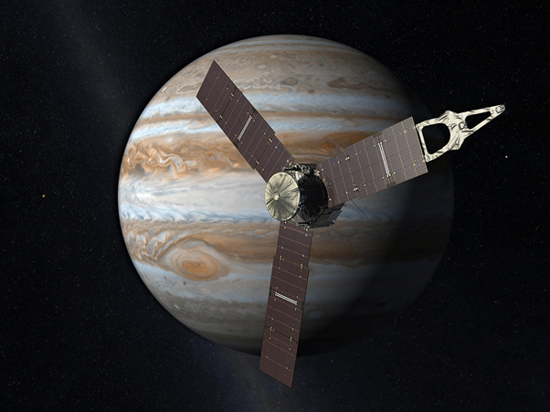

Знаменитое Большое красное пятно Юпитера – буря шириной 16 тысяч километров, которая бушует уже в течение нескольких столетий – уходит в атмосферу гиганта глубже, чем предполагалось. Выводы астрономов основаны на последних данных, полученных космическим аппаратом NASA «Juno», и представлены двумя (раз, два) статьями в журнале Sci.

Атмосфера Юпитера изобилует сильными штормами и вращающимися потоками вихрей. Среди них выделяется Большое красное пятно, которое могло бы поглотить Землю целиком. Однако неясно, ограничиваются ли эти явления верхними частями атмосферы планеты или простираются глубже. В поисках ответа на этот вопрос астрономы проанализировали микроволновые и гравитационные измерения с космического аппарата «Juno», которые позволили лучше понять характеристики атмосферных вихрей Юпитера.
«Используя микроволновый радиометр для исследования вертикальной структуры Большого красного пятна, а также двух других штормов, мы выяснили, что они простираются ниже слоя, на котором ожидается конденсация воды и аммиака, то есть уровня облаков планеты», – рассказывает Скотт Болтон, ведущий автор первого исследования из Юго-западного научно-исследовательского института (США). По мнению ученых, это предполагает наличие мелкомасштабных динамических процессов, таких как осадки и нисходящие потоки, на гораздо более глубоких уровнях, чем считалось ранее.

Во второй работе астрономы проанализировали гравитационные замеры в области Большого красного пятна, что позволило точнее определить его глубину. Они обнаружили, что, хотя гигантский шторм простирается глубоко в атмосферу, он все же намного мельче, чем окружающие и питающие его зональные потоки, которые уходят намного глубже. «Согласно полученным данным, глубина Большого красного составляет не более 500 километров, в то время как окружающие его потоки простираются до глубин, приближающихся к 3 тысячам километров», – заключила Марзия Паризи, ведущий автор второго исследования из Лаборатории реактивного движения NASA.